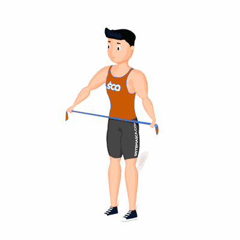

Mobilidade de Ombro

O exercício trabalha a melhoria da mobilidade dos ombros, que auxilia na realização de outras atividades físicas e previne lesões.
Ficha Técnica
Tipo: Mobilidade
Grupo Muscular: Ombro
Aparelho: Nenhum
Músculos: Nenhum
Como realizar
- Em pé, segurando uma faixa elástica de resistência forte, com os cotovelos estendidos;
- A distância entre as mãos deve ser um pouco maior do que a largura dos ombros;
- Inspire preparando-se para o movimento e na expiração flexione os ombros até levar a faixa atrás da coluna;
- Retorne a posição inicial e repita os movimentos.
 RC STORE
RC STORE